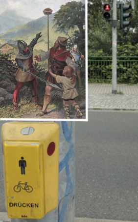

| ... Hier berichten wir von einer von den Zeitgenossen vielseits belächelten und zukunftsweisenden Fahrradreise zweier Künstler aus dem Jahr 2016. Kiki und Kuku hatten sich vorgenommen, Ihre kleine Oper von Dresden nach Bayreuth zu bringen, wo damals noch alljährlich die Opernfestspiele unter grossem automobilem Aufwand praktiziert wurden. Vermutlich waren die beiden die einzigen, die ganz normal wie heute üblich mit dem Fahrrad dorthin anreisten. Ihre Motivation dazu war wohl die Einsicht in die genannten Zusammenhänge gepaart mit dem Willen, selbst nicht mehr so viel Öl zu verbrauchen. Die uns heutzutage vorsintflutlich anmutenden Umstände dieser RadReise verdeutlichen anschaulich die Schwierigkeiten der Fahrradpioniere am Anfang des 21. Jhdts. ... |
| ... Hier berichten wir von einer von den Zeitgenossen vielseits belächelten und zukunftsweisenden Fahrradreise zweier Künstler Kiki und Kuku aus dem Jahr 2017. Kuku hatte nämlich nach einer Wartezeit von mehr als zwei Jahren endlich die Nachricht erhalten, daß der legendäre Meister Gerold in Fritzens speziell für ihn aus dem erlesensten und speziell ausgesuchten Klangholz eine neue Klarinette geschaffen hatte. Diese galt es abzuholen aus dem damals noch relativ kleinen, aber heute wegen Gerolds Meisterstücken weltbekannten Fritzens. Interessanterweise erfreute sich damals die heute in Vergessenheit geratene Siedlung mit dem Namen „Innsbruck“ einer letzten Blütezeit und dahin brachen Kiki und Kuku auf. Vermutlich waren Kiki und Kuku am Anfang des 21. Jahrhunderts die einzigen, die ganz normal wie heute üblich mit dem Fahrrad aus Sachsen nach Tirol anreisten. Ihre Motivation dazu war wohl die Einsicht in die vorweg genannten Zusammenhänge gepaart mit dem Willen, selbst nicht mehr so viel Öl zu verbrauchen. Die uns heutzutage vorsintflutlich anmutenden Umstände dieser RadReise verdeutlichen anschaulich die Schwierigkeiten der Fahrradpioniere am Anfang des 21. Jhdts. ... |
| ... ich glaube aber doch, daß ein gutes Clavichord, ausgenommen daß es einen schwächeren Ton hat, alle Schönheit mit dem Forte Piano gemein und überdem noch die Bebung und das Tragen der Töne voraus hat, weil ich nach dem Anschlage noch jeder Note einen Druck geben kan. (C. Ph. E. Bach, Versuch über die wahre Art das Clavier zu spielen, Einleitung §11)
... Hier berichten wir von einer von den Zeitgenossen vielseits belächelten und zukunftsweisenden Fahrradreise zweier Künstler Kiki und Kuku aus dem Jahr 2018. Die beiden hatten es sich nämlich in den Kopf gesetzt, die Kunst des Clavichordbaus zu erlernen, um diese bei der Beratung musikbegeisterter Tasteninstrumentenspieler weitergeben zu können. Im Zeitalter billiger Elektrizität wurde dieselbige für so unsinnige Dinge wie Klangerzeugung vielfältig eingesetzt, obwohl viele Menschen schon damals den Klang elektronischer Instrumente als zu synthetisch und unpersönlich empfanden. Die industrielle Produktion von Musikinstrumenten, insbesondere von Tasteninstrumten hatte schon lange die liebevolle und persönliche handwerkliche Fertigung von Instrumenten verdrängt. Clavichorde wurden damals kaum noch gespielt und wenn, dann nur von einer ganz kleinen Randgruppe der Gesellschaft. Man kann sich das alles heute, wo jedes Kind seine Musikinstrumente selbst bauen lernt gar nicht mehr vorstellen, aber es war so. Generell war die Gesellschaft in dieser Zeit geprägt von der Vorstellung, dass selbstständiges Arbeiten minderwertig und unselbstständige angestellte Tätigkeiten dem gegenüber zu bevorzugen wären, das jedenfalls wurde den Menschen von sogenannten Experten eingeredet, die es eigentlich besser wissen sollten. So ein Unsinn ! Sogar eine uralte Studie aus dem Jahr 2006 belegt schon, dass in selbstständigen Berufen stabilere Familienverhältnisse entstehen [1]. Die hohen Scheidungsraten und die Verwahrlosung vieler Kinder in dieser Zeit stehen damit in engem Zusammenhang. ... |
| Die Zeit ist gekommen, in der die den Ton angeben, die Musik machen und die Fahrradfahrer sagen, wo es lang geht. Um herauszufinden, ob das auch für Japan stimmt, sind Kiki und Kuku aufgebrochen und haben sich auf eine ganz grosse Reise begeben. |
| ... Heute berichten wir von einer von den Zeitgenossen vielseits belächelten und zukunftsweisenden Fahrradreise zweier Operisten Kiki und Kuku aus dem Jahr 2019. Begannen in der Zeit Rossinis die Eisnbahnen die Postkutschen zu verdrängen, so hatten 150 Jahre später Eisenbahnen, Autofahrbahnen und Flugzeuge ein gemütliches Reisen zu Fuß, mit der Kutsche oder dem Fahrrad völlig unmöglich gemacht. Derartige vernünftige Arten der Fortbewegung wurden von den Zeitgenossen bestenfalls als Freizeitbeschäftigung in besonders reizvollen Gegenden genutzt. Wer sich damit über weitere Strecken dienstlich fortbewegen wollte, wurde von wohlwollenden Mitmenschen jedenfalls belächelt, von den meisten jedoch für total verrückt gehalten. Kiki und Kuku eiferten trotzdem ihrem Vorbild Rossini nach, denn sie waren von dem Papiertheater Papirnik nach Essen zu einer gemeinsamen Produktion „Das doppelte Rossinchen“ eingeladen worden. Das motivierte sie zu einer Fahrradstudienreise in den Westen Deutschlands und die Niederlande. Glücklicherweise sind ihre Aufzeichnungen erhalten und wir können daraus einen historisch genauen Einblick in den kulturellen und technologischen Stand der Gesellschaft am Anfang des 21. Jahrhunderts erhalten. ... |
| Das Wirtschaftsleben fröhnte Henry Fords Ideologie des Fordismus und die Menschen wurden überall von Kindesbeinen an zu Konsumenten einer verkehrten automobilen Ideologie verzogen. Überall ? Nein, auf einer kleinen Insel in Kroatien namens Silba widersetzte sich eine kleine Gruppe von In- sulanern erfolgreich den Okkupationsbestrebungen der Autoindustrie. Die Musikanten Kiki und Kuku mit ihrer ,,kleinsten Oper der Welt” besuchten bevorzugt derartige besondere Orte mit besonderen Menschen, denn sie wollten durch ihr eigenes Konsumverhalten den Fordismus mit all seinen negativen Auswirkungen möglichstnicht fördern. So kam es daß sie den Herbst 2019 auf der Insel Silba verbrachten. Dabei lernten sie die Lebensweise dieser Inselbewohner kennen und erhielten einen Eindruck, welche positive Wirkung es auf die menschliche Zivilisation hat, wenn Güter wie Benzin, Wasser, Lebensmittel etc. nicht im Überfluß verfügbar sind. |
| Gleich vorweg, dies ist kein politischer Roman, auch keine Pamphlet gegen religiöse Einstellungen, und auch keine Streitschrift gegen eine bestimmte Art des Transportwesens, sondern eine authentische Schilderung des Seelenlebens einer Stadt an der Elbe zu Anfang des zweiten Milleniums, als Klimakrise und ein Virus die Welt in Atem hielten, ein Krieg in Syrien schon über ein Jahrzehnt tobte und ein Präsident in den Vereinigten Staaten Zwietracht säte. Was bewegte die Herzen der Bürger an der Elbe in dieser Zeit der Krisen, welchen Tätigkeiten gingen diese in Beruf und Freizeit nach und welchen tiefsinnigen Gedanken gaben sie sich hin ? Wie religiös waren die Menschen, von denen einige heftig gegen eine vermeintliche Islamisierung des Abendlandes protestierten ? Wie tolerant war die Gesellschaft wirklich, die sich offen, frei und demokratisch nannte ? Wie ging man mit Fanatismus um ? Ähnlichkeiten mit heute lebenden Personen sind übrigens rein zufällig und nicht beabsichtigt. First of all, this is not a political novel, nor a pamphlet against religious attitudes, nor a pamphlet against a certain type of transport, but an authentic description of the mental life of a city on the Elbe at the beginning of the second millennium, as a climate crisis and a virus Holding the world in suspense, a war in Syria had raged for over a decade and a president in the United States sowed discord. What moved the hearts of the citizens on the Elbe during this time of crisis, what activities did they pursue in their work and leisure time and what profound thoughts did they indulge in? How religious were the people, some of whom protested violently against the supposed Islamization of the West? How tolerant was the society that called itself open, free and democratic? How did you deal with fanaticism? Incidentally, similarities with people living today are purely coincidental and not intended. |  |